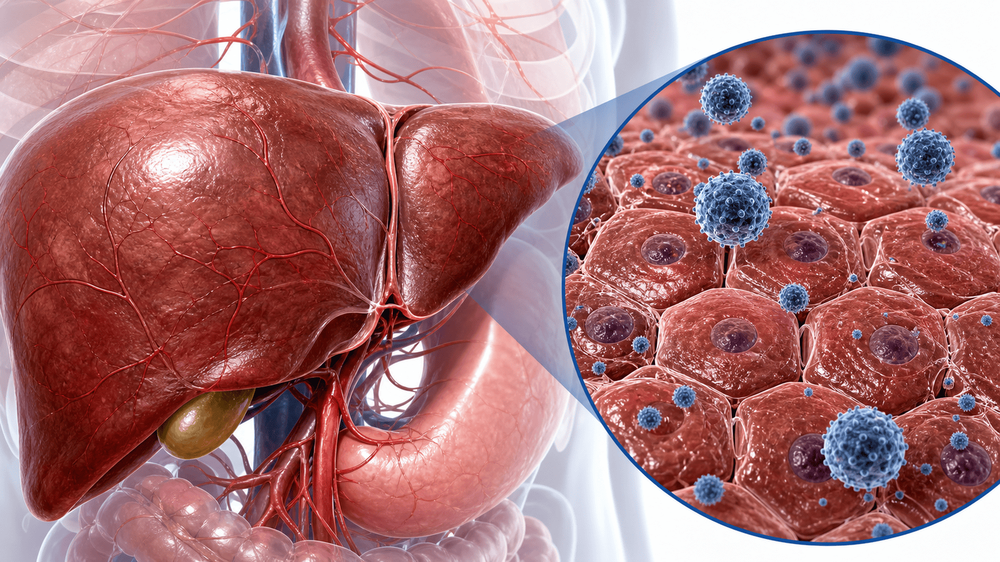
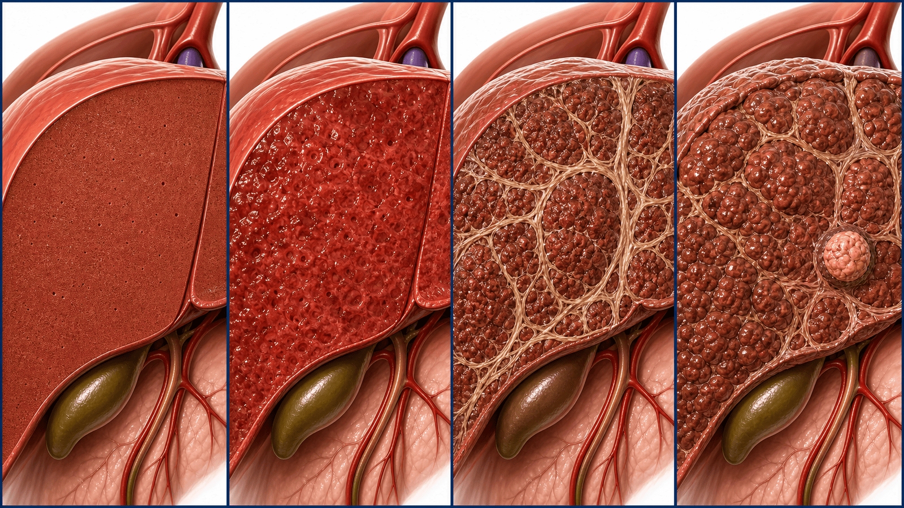
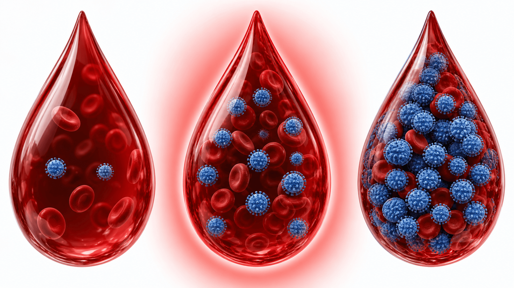
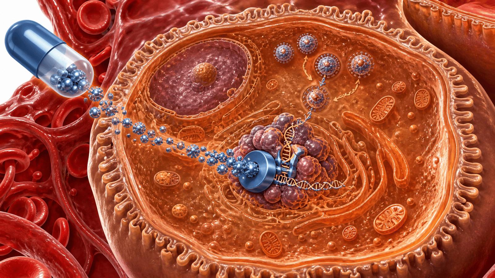

CHRONIC HEPATITIS B · 2026
만성 B형간염,
이렇게 관리합니다
2026 새 진료 기준 — 간수치가 아니라 '혈중 바이러스 양'으로 보고, 더 일찍 치료합니다
CHAPTER 01 · WHY IT MATTERS
우리나라 간암의 가장 큰 원인
B형간염은 간경변·간암으로 이어지는 핵심 위험 요인입니다
120만
국내 B형간염 감염자 (추정)
전체 유병률은 3% 미만으로 줄었지만, 40~60대는 여전히 3~4%로 높습니다. B형간염에 의한 간질환 사망은 인구 10만 명당 18.9명 — 세계보건기구(WHO) 목표(4명 이하)를 크게 웃돕니다.
치료율 22.2%
간암 1위 원인
대한간학회 2026
핵심
효과적이고 안전한 먹는 약이 있는데도 전체 환자 중 치료받는 분은 5명 중 1명뿐입니다. 치료가 필요한 분을 놓치지 않는 적극적 관리가 간암과 사망을 줄입니다.
CHAPTER 01 · WHAT IT IS
간에 오래 머무는 바이러스
대부분 어릴 때 감염되어, 증상 없이 수십 년 함께 지냅니다
감염 경로
대부분 '엄마 → 아기' 수직감염
우리나라 환자는 대부분 출생 전후에 감염되며, 거의 모두 유전자형 C형입니다. 감염 기간이 길어 간경변·간암 위험이 외국보다 높습니다.
증상
대부분 '증상이 없습니다'
간은 '침묵의 장기' — 피곤함 외에는 신호가 거의 없습니다. 혈액검사로만 감염과 진행 정도를 확인합니다.
확인 방법
간단한 피검사로 확인
HBsAg(표면항원)으로 감염 여부, HBV DNA(혈중 바이러스 양)·간수치·초음파로 진행 정도와 치료 필요성을 판단합니다.

CHAPTER 02 · NATURAL COURSE
증상 없이 조용히 진행합니다
치료하지 않으면 간이 서서히 굳고, 일부는 간암으로 진행합니다
STEP 01
만성 염증
바이러스가 간세포에 지속 감염되어 염증이 반복됩니다.
STEP 02
간섬유화
염증이 쌓이며 간이 점점 딱딱해집니다(흉터).
STEP 03
간경변
간이 크게 굳어 기능이 떨어지고 합병증이 생깁니다.
STEP 04
간암
간경변이 없어도 발생할 수 있어 정기 감시가 필수입니다.

CHAPTER 02 · NEW VIEW
이제 '바이러스 양'으로 봅니다
2026년부터 분류 기준이 바뀌었습니다 — 간수치(ALT) 중심에서 혈중 바이러스 양(HBV DNA) 중심으로
많음 · HIGH
바이러스 양 많음
혈중 바이러스 양(HBV DNA)이 매우 높은 단계(>1억 IU/mL).
중간 · MODERATE
중간 — 간암 위험 가장 높음
2천~1억 IU/mL 구간. 최근 연구에서 간암 위험이 가장 높은 것으로 확인됐습니다.
적음 · LOW
바이러스 양 적음
<2천 IU/mL. 간경변이 없으면 대체로 경과가 양호합니다.

CHAPTER 03 · KEY CHANGE
간수치가 정상이어도 치료할 수 있습니다
예전엔 "간수치가 올라야" 치료했지만, 이제는 다릅니다
예전 기준 (~2022)
- 간수치(ALT)가 정상 상한의 2배 이상 올라야 치료
- 바이러스가 많아도 간수치 정상이면 '경과관찰'
- 중간 바이러스 양 구간이 치료의 사각지대였음
새 기준 (2026)
- 바이러스 양을 기준으로 치료 여부 결정
- 간수치가 정상이어도 위험 구간이면 치료 시작
- 치료 대상이 넓어지고, 판단이 단순해짐
왜 바뀌었나
간수치가 정상이어도 바이러스에 의한 발암 과정은 진행될 수 있습니다. 그래서 간수치만으로는 간암을 충분히 막기 어렵습니다.
CHAPTER 03 · WHO TO TREAT
누가 치료를 시작하나요?
혈중 바이러스 양과 간 상태로 판단합니다
바이러스 양
어떻게 하나
치료
중간2천~1억 IU/mL
간암 위험이 가장 높은 구간 — 간수치와 관계없이 치료 시작
시작
많음>1억 IU/mL
30세 초과·간수치 상승·간섬유화 중 하나면 치료, 없으면 경과관찰
조건부
적음<2천 IU/mL
간경변이 없으면 경과관찰 — 간수치 오르면 다른 원인도 확인
관찰
간경변
바이러스가 검출되기만 하면 양과 관계없이 치료 시작
시작
치료를 시작하지 않더라도 그냥 두는 것이 아닙니다 — 3~6개월마다 검사하며 치료 시점을 놓치지 않도록 추적합니다.
⚠️ 건강보험 급여 안내 — 위는 학회 권고 기준입니다. 현재 급여는 기존 기준(간수치 상승 등)을 적용해, 간수치가 정상이고 간경변이 없으면 중등도라도 아직 급여가 안 될 수 있습니다. 치료 시작은 진료 상담으로 결정합니다.
CHAPTER 04 · TREATMENT
하루 한 알로 바이러스를 누릅니다
효과 좋고 안전하며 내성이 거의 없는 먹는 항바이러스제
1차 치료제
테노포비어 · 엔테카비어 · 베시포비어
하루 한 알. 바이러스 증식을 강력히 억제하고 내성 발생이 매우 드뭅니다.
효과
간암·사망 위험을 낮춤
장기 복용 시 간경변 진행을 막고 간암 발생과 사망을 줄이는 효과가 입증됐습니다.
맞춤 선택
상태에 맞춰 약을 고릅니다
콩팥·뼈가 약하면 그에 맞는 약으로, 임신 중에는 테노포비어로 선택합니다.

CHAPTER 04 · HOW LONG
오래 먹지만, 스스로 끊으면 위험합니다
목표는 바이러스를 눌러 간암을 예방하고, 더 나아가 '기능적 완치'에 이르는 것
치료 기간 — 장기 복용
- 대부분 오랜 기간 꾸준히 복용합니다.
- 임의 중단은 금지 — 간염이 갑자기 악화되거나 간기능이 나빠질 수 있습니다.
- 특히 우리나라에 많은 유전자형 C형은 중단 후 재발·악화 위험이 큽니다.
- 중단 여부는 반드시 진료의와 상의해 결정합니다.
치료 목표
- 단기 — 혈중 바이러스(HBV DNA)를 검출되지 않게 억제
- 장기 — 표면항원(HBsAg)까지 사라지는 기능적 완치
- 궁극적으로 간경변·간암 예방과 생존율 향상
기능적 완치에 이르면 치료 종료를 고려할 수 있습니다.
CHAPTER 05 · MONITORING
치료 여부와 관계없이 정기검사
간암은 일찍 발견할수록 잘 치료됩니다 — 6개월마다 챙기세요
6개월마다
간암 감시검사
40세 이상이거나 간경변이 있으면, 6개월마다 복부 초음파 + 혈액검사(AFP)를 받습니다.
정기적으로
혈액검사로 추적
간수치·바이러스 양을 정기적으로 확인하고, 치료 중에는 콩팥 기능도 함께 살핍니다.
관찰 대상도
'지금 치료 안 함' = 추적 필요
치료를 시작하지 않은 분도 3~6개월마다 검사해 치료 시점을 놓치지 않습니다.
CHAPTER 05 · SPECIAL CARE
임신·다른 치료 때 꼭 챙길 것
상황에 따라 미리 준비하면 위험을 크게 줄일 수 있습니다
임신 · 01
수직감염 예방
바이러스가 많으면(HBV DNA ≥20만 IU/mL) 임신 중 항바이러스제로 아기 감염을 예방합니다(테노포비어).
임신 · 02
출산·수유
아기는 출생 직후 백신 + 면역글로불린으로 보호합니다. 치료 중이 아니면 모유수유 가능합니다.
항암·면역억제 · 03
치료 전 반드시 확인
항암치료·면역억제제·스테로이드 전에는 B형간염 검사가 필수 — 바이러스 재활성화(악화)를 막습니다.
가족 · 04
가족도 검사·예방접종
함께 사는 가족은 검사를 받고, 항체가 없으면 예방접종으로 미리 보호합니다.
CHAPTER 06 · YOUR CHECKLIST
오늘부터 실천하기
꾸준함이 간을 지킵니다
01
처방받은 약은 매일 같은 시간에 거르지 않고 복용
02
약을 스스로 끊거나 거르지 않기 — 중단은 진료의와 상의
03
6개월마다 간암 감시검사(초음파+혈액)와 정기 진료
04
금주 — 술은 간 손상과 간암 위험을 높입니다
05
항체가 없으면 A형간염 예방접종 받기
06
가족 검사·예방접종 챙기기
07
다른 약·한약·건강기능식품 복용 시 미리 상담
→
궁금한 점은 진료 때 언제든 물어보세요
END OF DECK · THANK YOU
꾸준한 관리로
간암을 예방합니다
궁금한 점은 진료 때 언제든 문의해 주세요
Phone
031-893-4560
Hours
평일 08:30~18:30
토요일 08:30~13:30
토요일 08:30~13:30
Address
경기 용인 수지구
광교중앙로 298, 4층
광교중앙로 298, 4층
SCAN TO REVISIT
집에서 다시 보기
QR을 스캔하면 핸드폰에서
같은 자료를 다시 볼 수 있어요
같은 자료를 다시 볼 수 있어요